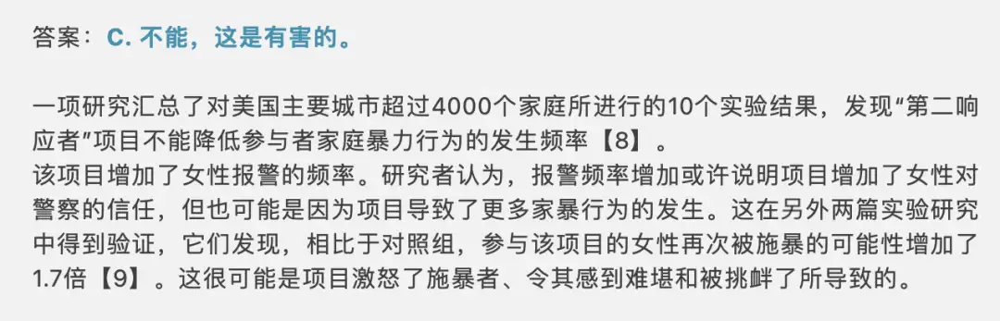

引言：
我们希望通过科学的研究方法来厘清家庭暴力现象的成因、发展趋势、与有效干预方法等重要问题，以此来推动家暴的治理与解决；然而，从科研成果的产出与呈现，到实际社会中相关政策与干预措施的应用，中间存在着许多难以被填补的空隙。
一方面，出色的学术研究从明确的研究问题出发，隐含独特的研究视角，而为保证研究的严谨性，学者必须要牺牲现实的复杂性。另一方面，相关决策者需要综合考量，听取多方意见，现实问题的复杂性与围绕在决策权周围的利益纠葛是单单一份高质量的学术研究不能解决的。
科研成果的非学术影响
socialpolicyinstitute.wustl.edu
科研成果可能在学术圈内产生“学术影响”，也可能延伸至学术圈外产生“非学术影响” （王楠&罗珺文，2020）。
比如，学者A研究了亲密伴侣暴力中施暴者的心理特征，并据此发表了三篇论文，三篇论文的总引用率超过了200次 -- 这里提到的发表数量和引用量等，都可以看作是该研究的“学术影响”；与此同时，基于这项研究，记者R撰写了一篇科普文章，并激起网络社群对于“亲密伴侣暴力”、“家庭暴力”等话题的讨论，这项研究便由此衍生出了它的“非学术影响”。
笼统地说，“非学术影响”是指“科研成果对学术界以外的更宽泛的社会、经济、文化、公共政策、医疗、环境以及公民生活质量所产生的影响、带来的改变和推动作用”（王楠&罗珺文，2020，p.63）。虽然关于“非学术影响”的具体定义仍存在分歧，但可以肯定的是，科研成果的非学术影响是复杂且多样的；当我们把话题聚焦至家庭暴力与政策制定上时，更是如此。
www.chicagobooth.edu
家庭暴力本身的诱因、影响、与后果本就错综复杂，在进行政策制定、资金投入、干预评估等时，便难免要于不同的利益方之间做取舍；学术研究可以为这类取舍提供参考，却很难提供一个标准答案。
科研成果与政策落实之间的空隙
cebcp.org
第二响应者项目，便是一个科研成果为政策落实提供佐证，却无法面面俱到的典例。
上世纪80年代开始，美国地区开始广泛应用一种叫做“第二响应者”（second responder program）的家暴干预项目（NIJ，2013）：警察收到家暴警情后会作为“第一响应者”处理案情，由专业人士组成的危机应对小组会紧接着在72小时内或7-14天后，作为“第二响应者”上门家访，为受害者讲解家暴的特点与危害、受害者的合法权益、可求助资源等信息；如果在家访时施暴者也在家，那么危机应对小组也会告知其家暴行为会面临的法律责任。
第二响应者项目的最终目的，是通过介绍给受害者可求助的资源和帮助她们建立长远的计划，使得受害者有能力离开暴力关系，或即使继续与施暴者保持亲密关系也有能力通过社会服务与司法协助学习应对技巧，以此来减少家暴的再犯率（NIJ，2013）。这一干预措施的设计是基于一个常识：家暴的再犯率极高，且受害者在受到实际伤害后的短时间内会很容易接受能够帮助其避免二次伤害的协助（NIJ，2013）。
理论上说，这一预设是有科学依据做支撑的。例如，家暴的高再犯率在全球范围内来看也已经是一个不争的事实；同时，学者们也发现，简单的警方介入很难有效的应对反复的暴力风险；司法、社会工作、心理支持等多方面协助服务，帮助受害者不再于心理和经济上过度依赖施暴者，是相比较而言更有效保护受害者免于重复伤害的途径，且此类介入需要在暴力行为发生后短时间内发生，以达到理想的帮扶效果（Petersen et al., 2022）。
那么你觉得，在家暴发生后安排专人上门探望受害者，这能有效避免家庭暴力再次发生吗？
A. 能，这是有效的
B. 不能，这是无效的
C. 不能，这是有害的
这一问题取自一篇旨在宣传有效公益的公众号文章（He666，2022），文章作者提供的正确答案是：C. 不能，这是有害的。
乍一看，似乎更符合逻辑的答案应该是“A. 能，这是有效的”；但作者也较“C. 不能，这是有害的”提供了他们的论述依据：

然而，联系之前我们对科研成果与其在社会中的应用之间的关系的简述，这个题目，可能无法作为选择题被回答。
首先，从科研成果的数据支持的角度来看，支持第二响应者有效（Foundation，2009）和无效（Davis et al.，2009）的观点皆有学术支持；虽然总的来说，关于第二响应者无效的论证是基于更加系统的研究（Davis et al., 2008；Petersen et al., 2022），这篇文章的主要依据也是来源于Davis et al. （2008）这篇元分析：作者们认为，目前的实验数据无法支持第二响应者项目有效的降低了家暴再犯率这一论断，且作者们在更新的一篇分析中呼吁（Petersen et al., 2022），在没有准确的数据支持第二响应者项目能够有效减少家暴再犯率时，资金与拨款应优先发放给已经被证明有效的项目。
因此，仅仅参考这篇元分析的结论，作者们只是认为在避免家庭暴力再次发生这一问题上，第二响应者项目也许是无效的，并未证其有害；其次，作者们也提到，该项目的有效性受到多个因素影响，例如回应时间和追踪评价系统的差异。 目前看来，似乎在家暴发生后尽快（如数小时内）介入则更有效，同时跟踪调查同一受害家庭的家庭内部家暴再犯率，或跟踪同一受害者在长时间内遭受的家暴再犯率（可能是同一施暴者或新的施暴者），也似乎会有不同的结果。但这些都需要更多的研究数据支持，目前无法得出结论。同时可以想象，危机应对小组在专业程度上的参差，和不同地区能够提供的救助资源的差距，也可能影响该地区这一项目的实施效果。
同时，其他学者也曾提出，社会大环境对家暴问题的介入有效性有显著影响。也就是说，我们在考量某个介入方式是否有效时，不能够忽略实施这一介入政策的社会大环境：为女性提供教育资源和工作机会，并不一定如人们所预想的一样总是有效的。在一个男女比较平等的社会环境中，提供相关资源会有利于女性赋权；然而在一个还没有达到性别平等的环境中，提供相关资源会带来反作用力——部分男性会因为感到权力与资源受到威胁而升级暴力行为（Kiani et al., 2021）。同时，这仅仅是在二元性别的语境下产生的科研成果；当我们考虑以多元性别与性取向的角度去思考和研究家暴问题时，是否会获取一些新的结论呢？
然而此公众号文章的说法，难免使得读者倾向于将其理解为——“在家暴发生后安排专人上门探望受害者，对受害者有害。”例如关于报警频率增加的原因，其实并不是这篇分析的研究问题；也就是说，作者们提到了关于报警频率增加的可能的原因的猜想，但暂未获取支持任何一方观点的实证。
我们以此为例，并不是为了证明此公众号的说法是错的：该公众号的呈现方式是出于号召大家更理性地将公益上的资金投入在有实际效应的项目中去的目的；而我们的撰文目的，是为了探索将学术成果以更全面的形态呈现给公众的方式，并意图推进学术成果与政策设计与实施考量的有效结合。
因此，当我们尝试将科研成果转化为政策有效性的评估手段时，需要为其设立一定的语境来保证我们应用科研成果的合理性和有效性。
更重要的是，以选择题的方式呈现这一问题时，不免将复杂的家暴问题过于简化。
家暴问题的复杂性与应用案例
关于什么是家庭暴力，不同国家与地区有不同的法律定义；什么样的关系属于暴力关系，会对受害者产生伤害？学术研究对此则有一定的共识——家暴的本质是权力与控制（Stark，2007），权力不平衡和充满极度控制欲与控制行为的环境，便是家暴肆虐的“沃土”。其中一些具体的、常见的情况包括：
拳打脚踢等行为暴力伤害
经济控制——如施暴者掌握全部的经济来源，或/并控制受害者的消费行为
心理虐待——如持续性打压、贬低受害者
社交控制——如限制受害者的交友圈
性虐待——如强迫与其进行性行为
控制受害者的日常穿着
威胁受害者若违背自己的意愿则要对方或对方的朋友、家人付出代价
在性别与性少数人群中，施暴者要挟受害者默默忍受，否则就向身边人、工作单位等暴露其性取向或性别认同等
那么协助受害者离开暴力环境，是家暴问题的最优解吗？
是的，如果：
受害者有完全独立生活的经济能力
受害者不惧外界的关注与诽议
受害者有支撑子女或其他家庭成员的经济能力
受害者在精神上做好了暂时独立生活的准备
受害者做好了独自支撑子女或其他家庭成员的精神准备
受害者对家暴有明确的认知、有良好的支持网络，以至于不会陷入新的一段暴力关系中
受害者能够放弃此前的全部社会资源与社交网络
受害者能够从暴力阴影中走出来
.......
同时：
施暴者不会在分开后跟踪受害者的生活
施暴者不会心存报复心理
施暴者不会对受害者本人付诸报复行为
施暴者不会报复受害者的家人、朋友
施暴者不会变本加厉地伤害下一位受害者
.......
考虑到以上所列的条件，再回看“在家暴发生后安排专人上门探望受害者，这能有效避免家庭暴力再次发生吗？”这一问题，便不难意识到，若缺失一个应用的语境，这个问题的答案很难被归类为“有效”、“无效”、或“有害” ，因为“在家暴发生后安排专人上门探望受害者”，仅仅是解决家暴问题需要提供的一系列支持中的一环。
nysenate.gov
2019年，美国纽约州出台了家暴幸存者正义法案（Domestic Violence Survivors Justice Act）（Persaud, 2019），允许法官在处理家暴受害者“反杀”施暴者的案件中减轻量刑。在家庭暴力案件中，受害者长期生活在威胁和恐惧之中，很多受害者只有在施暴者熟睡、醉酒、或其他失去行为能力的时刻有胆量和能力反抗；在施暴者熟睡时将其杀害，属于正当防卫的范畴吗？这是一个跨学科不断被讨论的问题，虽存在争议，但目前达成的共识是，这些幸存者并不应该和普通的谋杀案等同来判刑。
这是一个对于家暴问题复杂性的理解，比较乐观的应用。
在学术研究中，解决“怎么办”的问题总是最难的。但学术研究从来不是指导现实生活的手册，它提供的是看待世界的独特视角，它激发的是探索特定领域的不屈精神。因此，当身为普通人的读者在阅读非学术平台发布的科普性文章时，希望你我可以带着批判性态度去看待那些未铺陈具体场景便得出笃定结论的文字。而如若你我不只是看客，还身处解决家暴问题相关的社会组织，如何弥合学术产出与政策实施之间的鸿沟是我们绕不开的责任。
参考文献
——上下滑动查看更多参考文献——
作者 I 高天月 庞海尘
排版/封面 I 戴翰林